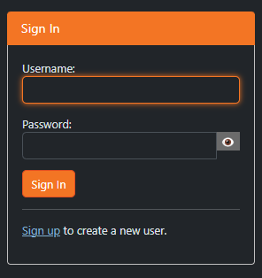
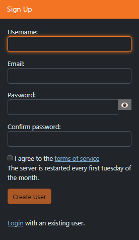
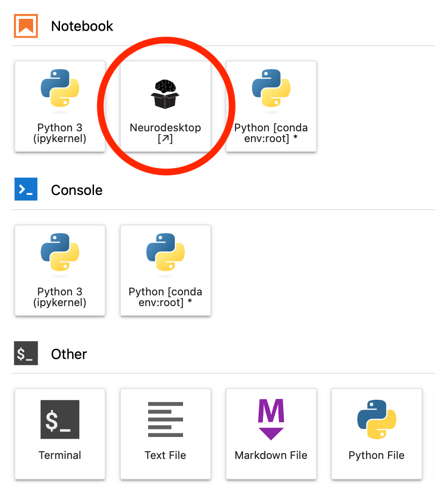
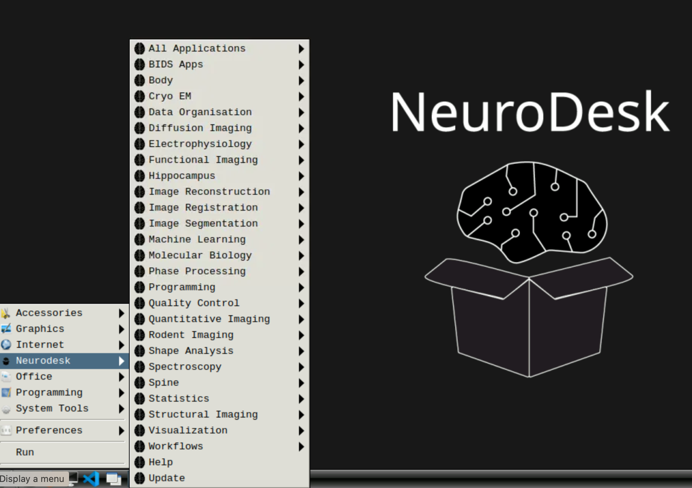
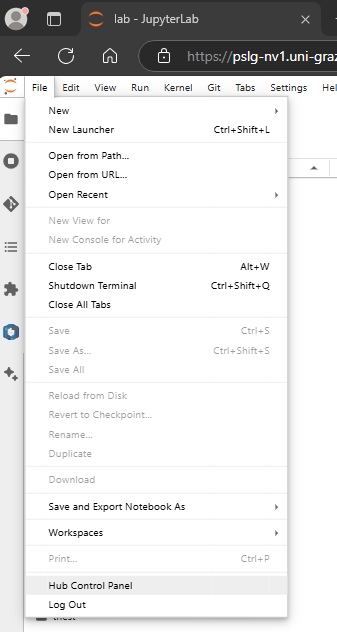
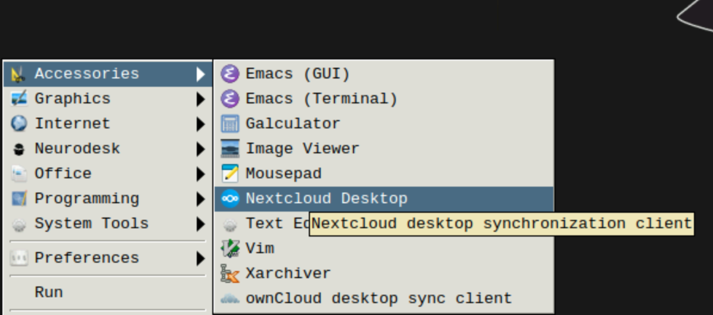
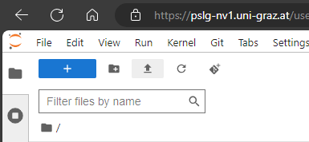
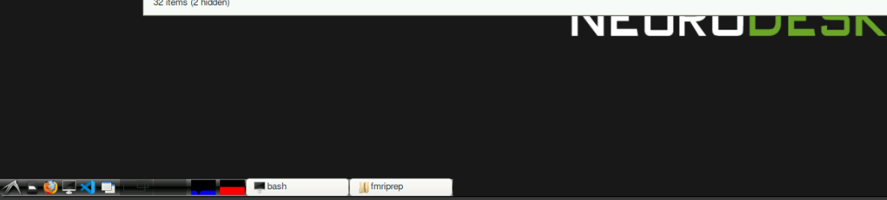
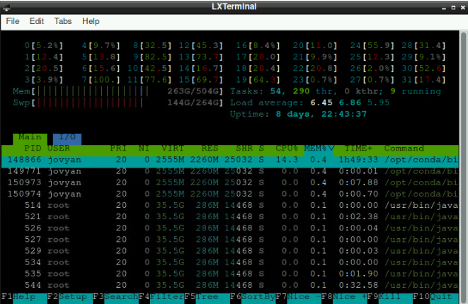

Neurodesktop access
General information
Neurodesktop is a Linux environment specifically developed for open and reproducible neuroimaging. For details, see https://www.neurodesk.org
This page provides information and instructions on how to use neurodesktop on our lab’s server.
Access
Employees
Office computers and VPN with an employee account
Non-employees (students and interns)
Office computers
Student PC room
Resources
Each neurodesktop user is limited to 256GB RAM out of 504GB and to 20 out of 32 CPU cores.
Getting an account
Use a computer with server access (described in Access section)
Open a browser and type https://pslg-nv1.uni-graz.at
Select “sign up”

Fill out the following fields
Username: first part of your univesity email account before “@”, e.g. jane.doe if your email address is jane.doe@edu.uni-graz.at
Email: your university student or employee email address (if you are a course participant: university student email address)
Password of your choice

After you sign up, your account needs to be authorized by the technical staff. This may take a few days. If there is no progress, please check back with us.
Once your account is authorized, you should be able to log in with your credentials (you won’t get a any special notifications, so please just check regularly)
Using Neurodesk
Once your account has been authorized
Open a browser and type https://pslg-nv1.uni-graz.at
Sing in with your credentials
You will see a JupyterLab session. In neurodesk everyone becomes a linux user “jovyan”. Your home directory
/home/jovyanwill appear on the left handideYou can use the terminal or jupyter notebook directly in the browser by clicking the corresponding icons
If you would like to use graphical interface, you can start the neuroDESKTOP by clicking on the icon.

You should see the desktop with all the apps:

If you close this window and reopen it later, all your work will be saved as you left it (unless the server has been restarted in the meantime, which happens every Tuesday)
You can use https://pslg-nv1.uni-graz.at/hub/home to control your container (start/stop) or change your password. You can also reach the hub home by choosing File -> Hub Control Panel from the menue.

First usage
The first time you start the neurodesk or a specific neurodesktop application, it may take a while until it opens. Be patient! This is because the first time everything gets downloaded in the background. It will be much faster when you perform the same operations repeatedly (until the next server reboot).
Storing data
If working via neurodesk, you SHOULD store data in your home directory. This data is kept after server restart and is backed up.
Data transfer
There are currently two alternatives
You can transfer the data via nextcloud client, which is included in neurodsktop

“file upload” button at the top of the jupyter lab menu (up-pointing arrow) or download by right-clicking on the relevant files. This option does not currently support multiple files, so if you want to transfer many files at once this way, it is advisable to zip them.

Software
Using FreeSurfer
To force freesurfer/freeview to see the /storage folder, source freesurfer from the terminal as follows
ml freesurfer/7.4.1
cd /storage
freeviewTo set up custom subject directory in a container, use the following (instead of export SUBJECTS_DIR=)
export SINGULARITYENV_SUBJECTS_DIR=[yourpath] export APPTAINERENV_SUBJECTS_DIR=[yourpath]Using fitlins
Note that fitlins is currently not recommended; we switched to using nilearn to fit the GLM. See the “DICOM to GLM” pipeline for details
Using FitLins (not a part of neurodesktop basic set of tools) with Singularity:
singularity run /shared/poldracklab_fitlins_latest-2022-10-17-32670dc66bf7.simg [your fitlins commands]
Please note that we are abandoning fitlins usage and are switching to nilearn for GLM analysis
Other docker-based software
If you would like to use some other software package that is not directly available through neruodesk, but is distributed as docker; you can use it by building a singularity image in the shared folder (so that it is available for everyone), e.g.:
singularity build /shared/singularity/deepprep/deepprep-25.1.0.simg docker://pbfslab/deepprep:25.1.0
and then run it as above:
singularity run --cleanenv /shared/singularity/deepprep/deepprep-25.1.0.simg
Resource (esp. RAM) usage
Please keep an eye on your resource usage, especially RAM. If too much RAM is used up by users, the server will be slow and eventually unusable.
The overall resource usage on the server (all users) is displayed in the bottom left of the neurodesktop interface as blue and red bars:

If you want to check how much resources is used by you, open the terminal and type “htop” (you can use F6 to sort processes by “percentage memory”):

Using notebooks and scripts in JupyterLab
When you want to use python scrips or notebooks, you´ll probably set them up in JupyterLab. There are a few “nice-to-have” (e.g. changing the Theme at the section Settings at the menu bar) but also potentially crucial settings that are worth taking a look at:
Settings > Settings Editor- at the sidebar, go to
Notebook. Here you have the option to individualize different aspects about your notebooks. Two potentially important/helpful adaptations:- Enable “Auto Closing Brackets” (should be right at the top). When handling multiple brackets, this might be helpful to keep track of where you are.
- If you scroll down a bit, there should be “Shut down kernel”. Even though unused kernels are shut down after 24h automatically, it might be a good practice to enable this option. This results in an automatic kernel-shutdown whenever you close a notebook. This helps to keep the RAM clean by avoiding active kernels that are not used.
- at the sidebar, go to
Code Completion. Depending what you are used to when coding, you can activate the optionEnable autocompletionhere
- at the sidebar, go to
The ⏩ sign: \(\to\) by clicking this button at the top of notebooks, it will restart the kernel and run the whole notebook sequentially (so all cells after each other)
The ⏵ sign: run the current cell (Alternative:
Strg+Enter)The ⏹ sign: interrups all current processes of the kernel
The ⟳ sign: restarts the kernel (all variales are lost, everything is cleared from RAM)
Ensuring limited strain on RAM for notebooks with high RAM demands: Sometimes you need to run notebooks that take some time and that require much RAM (e.g. analysis/processing with surface images of multiple subjects). First, you should figure out how many subjects are even possible at once (due to limited RAM). If you run a notebook that takes so much time that you potentially can´t look at the data immediately (as it may take an hour an you are not in the office then), it can be useful to add cell at the very end of your notebook with
os._exit(0)(if you dodn´t useosin your notebook, you have to includeimport osbefore that line as well). Including this line and with using ⏩, your notebook runs through completely and automatically aborts the kernel afterwards. Thus, you free up the required RAM immediately after your notebook finished (obviously, you must make sure that the data you need is saved in the process)
Information for lab members with ssh access
Folder mappings:
(left is server right is neurodesk)
/storage -> /storage
/storage/neurodesk/shared -> /shared
/storage/neurodesk/users/{username} -> /home/jovyan
Only these three folders are persistent.
For interfacing with the folders on storage
You can create symbolic links in your home directory:
ln -s /storage/ /home/jovyan/storage
Checking resource usage directly on the server
- resource usage per neurodesk container
docker stats- per user and process
htop(all student containers are assigned to one user “allg_user”)